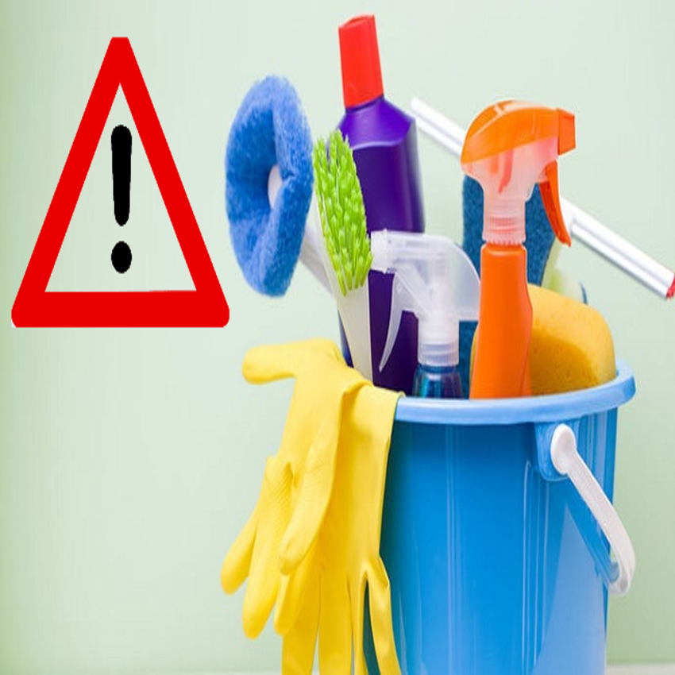
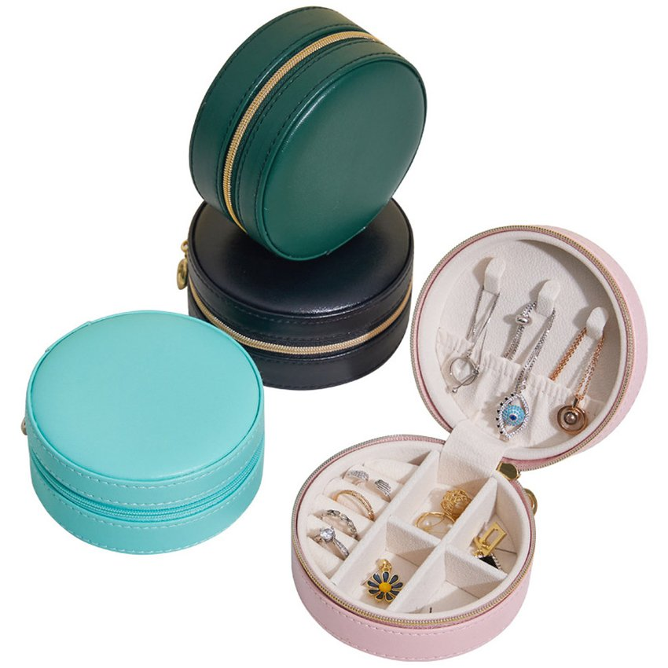
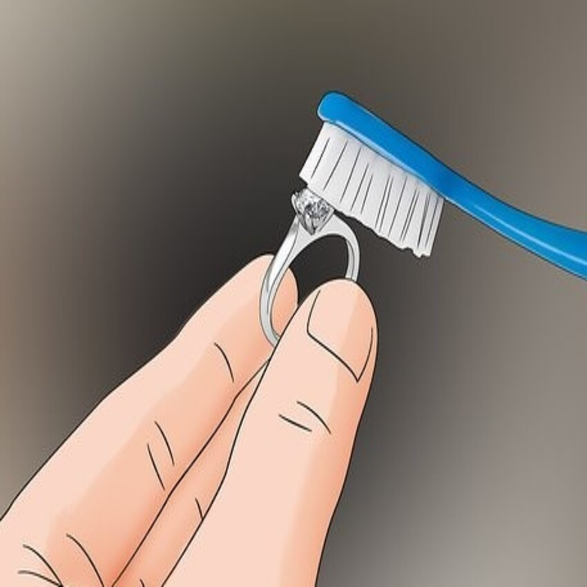

Consejos para tus joyas
- En joyería, hay diferentes técnicas para bañar una pieza en oro. Si bien es cierto que nuestros
accesorios no suelen tornarse negros, siempre es bueno tener en cuenta estas sencillas recomendaciones
para asegurar su preservación de los joyas que están bañadas en oro:
-
No realices actividades deportivas con las joyas o cuando vayas a sudar mucho. Las joyas no son del todo
aptas para actividades como yoga, nadar, o ir al gimnasio.
-
Evita el contacto de la joya con productos cosméticos, químicos, ácidos, de limpieza, jabones, cloro o
cualquier cosa que dañen su color: lacas, perfumes, champús, etc. También se recomienda no bañarte con
ellas.
-
Para la limpieza de las joyas, debes usar agua tibia y jabón PH neutro. Usa un cepillo de dientes suave
e inmediatamente tienen que secarse con un paño limpio.
-
Tienes que comprobar frecuentemente que los cierres estén en buen estado.
-
No se debería exponer las joyas a cambios bruscos de temperatura.
-
Es preferible guardar las joyas de manera individual en papel de china (tissue paper) para su
conservación.
-
Si utilizas un estuche o joyero, procura que las piezas estén en compartimentos separados, ya que las
piezas con baño en oro se pueden oxidar si se encuentran al lado de otra pieza que pueda estar oxidada.
-
También hay que tener en cuenta que el propio PH de tu piel puede alterar el color de tus joyas. Existen
productos para limpiar las joyas.


